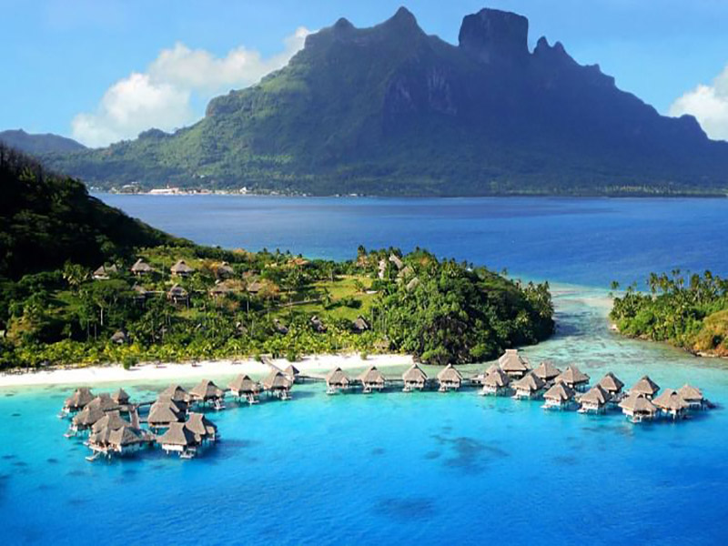

Pantai Ora, Kepingan Keindahan Dari Maluku Tengah
Pantai Ora namanya mungkin terdengar asing di telinga, tapi keindahan yang dimiliki Pantai Ora akan membius siapa saja yang datang. Lautan yang jernih, alam yang indah, serta udara yang bersih adalah sedikit gambaran tentang keindahan di Pantai Ora. Bahkan ada pula yang menyandingkannya dengan keindahan yang ada di Maldives atau Maladewa. Alam Indonesia sungguh sangat mengagumkan, potensi alam yang dimilikinya begitu beragam. Mulai dari air terjun, danau, bukit, gunung, juga pantai.

Daya Tarik yang Dimiliki Pantai Ora
Pantai Ora adalah salah satu wisata yang berada di Maluku. Ketika Anda berkunjung kesini, Anda pun akan langsung dibuat terpukau akan pemandangan dan pesona alamnya yang menakjubkan. Setibanya disini, Anda pun akan dibuat betah akan keindahannya dan tidak ingin kembali pulang. Ketika berada disini, Anda juga akan disuguhkan dengan keindahan taman bawah lautnya. Dengan airnya yang jernih, tanpa perlu snorkeling, Anda sudah bisa melihat indahnya terumbu karang yang cantik dengan mata telanjang. Pantainya sendiri pun tergolong sangat bersih. Sehingga Anda akan bisa bermain dengan lebih nyaman.
Saat berada di pantai ini, Anda akan merasakan keindahan bawah laut bak kaca. Sebab dengan airnya yang super jernih, banyak wisatawan yang mengatakan bahwa pantai ini mirip dengan pantai pantai yang ada di Maladewa. Tentunya, Anda tak boleh melewatkan kesempatan ini ketika sedang berkunjung ke Maluku. Selain itu, pantai ini juga memiliki pasir putih yang bersih. Air lautnya yang berwarna kebiruan dan hijau menjadi daya tarik tersendiri bagi wisatawan yang sedang berlibur kesini. Ditambah lagi dengan indahnya terumbu karang dan biota laut yang ada di pantai ini akan membuat Anda terkagum kagum.
Jika Anda ingin melihat keindahan alam bawah laut yang ada di Pantai Ora, Anda pun tak perlu menyelam dengan terlalu dalam. Hal ini dikarenakan Anda hanya perlu menyelam sekitar 2 hingga 3 meter saja. Nantinya Anda pun akan langsung disuguhkan dengan keindahan dari surga bawah laut yang ada di pantai satu ini.
Alamat dan Rute Menuju Lokasi Pantai Ora
Setelah mengetahui keindahan dari pantai satu ini, Anda bisa datang ke Pulau Seram, Kecamatan Seram Utama yang berada di Kabupaten Maluku Tengah. Pantai ini termasuk salah satu pantai yang memiliki lokasi di sebelah Desa Sawai dan Desa Saleman. Lebih tepatnya yang berada di teo hutan Taman Nasional Manusela. Untuk bisa kesini, Anda dapat melakukan perjalanan dengan menggunakan pesawat terlebih dahulu dan turun di Bandar Udara yang ada di kota Ambon. Ada beberapa penerbangan yang memiliki rute menuju ke kota Ambon, baik dalam bentuk direct flight ataupun transit. Anda bisa memilih sesuai dengan lokasi tempat Anda berada dan juga budget yang Anda miliki.
Sesampainya di kota Ambon, Anda bisa melanjutkan perjalan menuju ke Pantai Ora dengan melalui Pelabuhan Hulnahara yang berada di Tulehu. Ketika sampai di pelabuhan, Anda bisa menggunakan kapal ferry dengan arah menuju ke Amahi. Perlu Anda ketahui bahwa rute menuju ke Amahi hanya terdapat dua kali perjalanan setiap harinya. Jadwal tersebut antara lain yakni pada pukul 9 pagi dan 4 sore saja. sedangkan jadwal kapal ferry tersebut hanya ada pada hari Senin hingga Sabtu. Selain itu, apabila Anda ingin melakukan perjalanan di hari Minggu, Anda hanya bisa naik kapal pada pukul 11 siang saja. sedangkan untuk baliknya yakni pukul 8 pagi dan 2 siang di hari Senin – Sabtu. Dan untuk hari minggu yakni pukul 3 sore.
Sesampainya Anda di Pelabuhan Amahi, Anda bisa menyewa kendaraan darat. Hal ini dikarenakan belum tersedia transportasi umum di daerah ini. dengan melakukan perjalanan darat tersebut, Anda akan menempuh waktu yakni sekitar 2.5 jam dari Amahai menuju ke desa Saleman. Dalam perjalanan tersebut, Anda pun akan diajak untuk menyusuri wilayah kota Masohi dan juga Teon, Nila, Serua atau yang disebut dengan TNS. Sepanjang perjalanan, Anda akan melewati jalur pegunungan yang berliku liku. Namun tak perlu khawatir pemandangan dari Taman Nasional Manusela akan memanjakan mata Anda. Kemudian, Anda pun akan sampai di pelabuhan Desa Saleman. Dari sini, Anda akan menggunakan perahu bermesin. Jarak tempuh dari pelabuhan Desa Saleman menuju ke Pantai Ora ini hanya membutuhkan waktu sekitar 15 menit saja. Umumnya warga sekitar yang ingin menuju ke lokasi pantai terbiasa berjalan kaki di jalan setapak yang berada di pesisir Teluk Sawai.